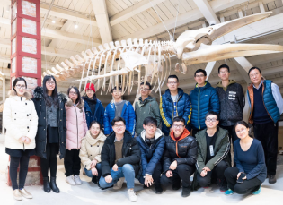
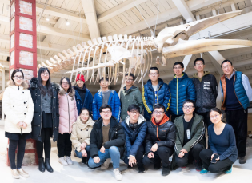

志愿团队
/
标本馆馆长：张贵友 教授
主管老师：张彤老师；王菁兰老师
志愿团队：
助管：苏尚；韩再铭
历任队长：陈潇月 沈睿 陈怀庆 董旭 靳翔宇 李昭璐 沈子杰
志愿者名单
/
刘瑜茜；冉雷莉；苏尚；王瑶；王琬旸；朱松涛；李炎剑；陈潇月；陈亚琼；曹琳琳；邓攀；黎力；孙喜梅；王洁；杨丹灵；周玉莲；张云霄
崔丽嘉；崔依同；沈睿；甘佩佩；吴绍瑜
赵磊；杜禹贤；杜明建；李辰意；李泰伯；史小婧；邹梦廉；张弯弯；杨舒云；张茗君
张艺君；陈怀庆；陈爽；李天一；马思佳；王东锔；吴健晨；徐银燕
李仁宽；侯怡然；焦旭；刘松雷；乔鹏飞；陈修齐；董旭；窦正超；何欣彤；刘钥；莫涵；徐家璐
韩再铭；车希明；郜雪菲；钱文超；杨卓；邹心之
靳翔宇；肖嘉谈；邓亚强；周卓伟
李冬源；李心怡；王凌寒；刘菱珊；卢一岫；马瑜蔚；吴静怡；余梦彤；郑凯鸣；孔洁；李昭璐；许心玉；刘启豪
靳翔宇；肖嘉谈；邓亚强；周卓伟
陈瑶；丁源；胡钰彬；黄莺；姜梦馨；金世杰；马永超；王贺楠；武欣楠；姚利昂
丁佳伟；王秋艳；沈子杰；叶晶美奇；袁慕风；周爽
志愿者团队
/
 
